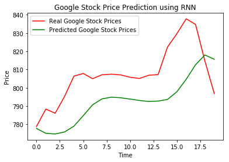

########################################################
# Problem Description #
# Predict Google stock price for the month of Jan 2017 #
# using the data for the past 1258 days #
########################################################
import numpy as np
import matplotlib.pyplot as plt
import pandas as pd
dataset_train = pd.read_csv('Google_Stock_Price_Train.csv')
print dataset_train.head()
training_set = dataset_train.iloc[:, 1:2].values
training_set.shape
Date Open High Low Close Volume
0 1/3/2012 325.25 332.83 324.97 663.59 7,380,500
1 1/4/2012 331.27 333.87 329.08 666.45 5,749,400
2 1/5/2012 329.83 330.75 326.89 657.21 6,590,300
3 1/6/2012 328.34 328.77 323.68 648.24 5,405,900
4 1/9/2012 322.04 322.29 309.46 620.76 11,688,800
(1258, 1)
# Scaling should always be applied for
# Deep Learning models
from sklearn.preprocessing import MinMaxScaler
sc = MinMaxScaler()
training_set_scaled = sc.fit_transform(training_set)
# the memory of RNN depends on the number of timesteps you select
# if timesteps = x then the output depends on the previous x inputs
# Create input set that consists of 60 dimensions
# hence, the output of current day will be based on
# the prices of previous 60 days
X_train = []
y_train = []
for i in range(60, 1258):
X_train.append(training_set_scaled[i - 60: i, 0])
y_train.append(training_set_scaled[i, 0])
X_train, y_train = np.array(X_train), np.array(y_train)
# Reshape : convert our 2D array to 3D
(batch_size, timesteps) = X_train.shape
# This is done because the RNN class in Keras expects a
# 3D Tensor
X_train = np.reshape(X_train, (batch_size, timesteps, 1))
# Building RNN
from keras.models import Sequential
from keras.layers import Dense, LSTM, Dropout
# Initialise Sequential model
regressor = Sequential()
# units is the output dimensionality
# return sequences will return the sequence
# which will be required to the next LSTM
# input shape will need only the last 2 dimensions
# of your input
################# 1st layer #######################
regressor.add(LSTM(units=50, return_sequences=True,
input_shape=(timesteps, 1)))
# add Dropout to do regulariztion
# standard practise to use 20%
regressor.add(Dropout(0.2))
################# 2nd layer ######################
# After the first time, it's not required to
# specify the input_shape
regressor.add(LSTM(units=50, return_sequences=True))
regressor.add(Dropout(0.2))
################# 3rd layer ######################
regressor.add(LSTM(units=50, return_sequences=True))
regressor.add(Dropout(0.2))
################# 4th layer ######################
# the last layer needn't return the sequence, so
# return_sequences will be False
regressor.add(LSTM(units=50))
regressor.add(Dropout(0.2))
################# 5th layer ######################
# Last layer would be the fully connected layer,
# or the Dense layer
#
# The last word will predict a single number
# hence units=1
regressor.add(Dense(units=1))
# Compiling the RNN
# The loss function for classification problem is
# cross entropy, since this is a regression problem
# the loss function will be mean squared error
regressor.compile(optimizer='adam', loss='mean_squared_error')
regressor.fit(X_train, y_train, epochs=100, batch_size=32)
Epoch 1/100
1198/1198 [==============================] - 14s 12ms/step - loss: 0.0525
Epoch 2/100
1198/1198 [==============================] - 10s 9ms/step - loss: 0.0056
Epoch 3/100
1198/1198 [==============================] - 11s 9ms/step - loss: 0.0054
Epoch 4/100
1198/1198 [==============================] - 12s 10ms/step - loss: 0.0054
Epoch 5/100
1198/1198 [==============================] - 22s 18ms/step - loss: 0.0049
Epoch 6/100
1198/1198 [==============================] - 36s 30ms/step - loss: 0.0053
Epoch 7/100
1198/1198 [==============================] - 35s 29ms/step - loss: 0.0047
Epoch 8/100
1198/1198 [==============================] - 35s 30ms/step - loss: 0.0043
Epoch 9/100
1198/1198 [==============================] - 36s 30ms/step - loss: 0.0054
Epoch 10/100
1198/1198 [==============================] - 29s 24ms/step - loss: 0.0042
Epoch 11/100
1198/1198 [==============================] - 10s 9ms/step - loss: 0.0041
Epoch 12/100
1198/1198 [==============================] - 10s 8ms/step - loss: 0.0039
Epoch 13/100
1198/1198 [==============================] - 10s 8ms/step - loss: 0.0043
Epoch 14/100
1198/1198 [==============================] - 10s 8ms/step - loss: 0.0037
Epoch 15/100
1198/1198 [==============================] - 10s 8ms/step - loss: 0.0044
Epoch 16/100
1198/1198 [==============================] - 10s 8ms/step - loss: 0.0036
Epoch 17/100
1198/1198 [==============================] - 10s 9ms/step - loss: 0.0036
Epoch 18/100
1198/1198 [==============================] - 12s 10ms/step - loss: 0.0042
Epoch 19/100
1198/1198 [==============================] - 11s 9ms/step - loss: 0.0035
Epoch 20/100
1198/1198 [==============================] - 11s 9ms/step - loss: 0.0033
Epoch 21/100
1198/1198 [==============================] - 15s 13ms/step - loss: 0.0040
Epoch 22/100
1198/1198 [==============================] - 13s 11ms/step - loss: 0.0035
Epoch 23/100
1198/1198 [==============================] - 14s 12ms/step - loss: 0.0030
Epoch 24/100
1198/1198 [==============================] - 35s 30ms/step - loss: 0.0028
Epoch 25/100
1198/1198 [==============================] - 26s 21ms/step - loss: 0.0030
Epoch 26/100
1198/1198 [==============================] - 35s 29ms/step - loss: 0.0030
Epoch 27/100
1198/1198 [==============================] - 16s 13ms/step - loss: 0.0032
Epoch 28/100
1198/1198 [==============================] - 16s 13ms/step - loss: 0.0029
Epoch 29/100
1198/1198 [==============================] - 13s 11ms/step - loss: 0.0036
Epoch 30/100
1198/1198 [==============================] - 10s 9ms/step - loss: 0.0031
Epoch 31/100
1198/1198 [==============================] - 14s 11ms/step - loss: 0.0030
Epoch 32/100
1198/1198 [==============================] - 25s 21ms/step - loss: 0.0030
Epoch 33/100
1198/1198 [==============================] - 25s 21ms/step - loss: 0.0028
Epoch 34/100
1198/1198 [==============================] - 22s 18ms/step - loss: 0.0030
Epoch 35/100
1198/1198 [==============================] - 31s 26ms/step - loss: 0.0029
Epoch 36/100
1198/1198 [==============================] - 33s 28ms/step - loss: 0.0027
Epoch 37/100
1198/1198 [==============================] - 24s 20ms/step - loss: 0.0026
Epoch 38/100
1198/1198 [==============================] - 22s 19ms/step - loss: 0.0026
Epoch 39/100
1198/1198 [==============================] - 10s 9ms/step - loss: 0.0027
Epoch 40/100
1198/1198 [==============================] - 11s 10ms/step - loss: 0.0025
Epoch 41/100
1198/1198 [==============================] - 14s 12ms/step - loss: 0.0028
Epoch 42/100
1198/1198 [==============================] - 11s 9ms/step - loss: 0.0026
Epoch 43/100
1198/1198 [==============================] - 11s 9ms/step - loss: 0.0026
Epoch 44/100
1198/1198 [==============================] - 12s 10ms/step - loss: 0.0025
Epoch 45/100
1198/1198 [==============================] - 12s 10ms/step - loss: 0.0024
Epoch 46/100
1198/1198 [==============================] - 12s 10ms/step - loss: 0.0023
Epoch 47/100
1198/1198 [==============================] - 16s 13ms/step - loss: 0.0026
Epoch 48/100
1198/1198 [==============================] - 22s 18ms/step - loss: 0.0025
Epoch 49/100
1198/1198 [==============================] - 21s 17ms/step - loss: 0.0024
Epoch 50/100
1198/1198 [==============================] - 27s 23ms/step - loss: 0.0023
Epoch 51/100
1198/1198 [==============================] - 33s 28ms/step - loss: 0.0026
Epoch 52/100
1198/1198 [==============================] - 17s 14ms/step - loss: 0.0024
Epoch 53/100
1198/1198 [==============================] - 11s 9ms/step - loss: 0.0023
Epoch 54/100
1198/1198 [==============================] - 11s 9ms/step - loss: 0.0021
Epoch 55/100
1198/1198 [==============================] - 10s 9ms/step - loss: 0.0023
Epoch 56/100
1198/1198 [==============================] - 13s 11ms/step - loss: 0.0023
Epoch 57/100
1198/1198 [==============================] - 15s 13ms/step - loss: 0.0022
Epoch 58/100
1198/1198 [==============================] - 14s 12ms/step - loss: 0.0023
Epoch 59/100
1198/1198 [==============================] - 18s 15ms/step - loss: 0.0022
Epoch 60/100
1198/1198 [==============================] - 12s 10ms/step - loss: 0.0023
Epoch 61/100
1198/1198 [==============================] - 14s 12ms/step - loss: 0.0022
Epoch 62/100
1198/1198 [==============================] - 13s 11ms/step - loss: 0.0021
Epoch 63/100
1198/1198 [==============================] - 13s 10ms/step - loss: 0.0018
Epoch 64/100
1198/1198 [==============================] - 13s 11ms/step - loss: 0.0020
Epoch 65/100
1198/1198 [==============================] - 12s 10ms/step - loss: 0.0017
Epoch 66/100
1198/1198 [==============================] - 11s 10ms/step - loss: 0.0022
Epoch 67/100
1198/1198 [==============================] - 12s 10ms/step - loss: 0.0019
Epoch 68/100
1198/1198 [==============================] - 13s 11ms/step - loss: 0.0019
Epoch 69/100
1198/1198 [==============================] - 11s 9ms/step - loss: 0.0020
Epoch 70/100
1198/1198 [==============================] - 11s 9ms/step - loss: 0.0019
Epoch 71/100
1198/1198 [==============================] - 11s 9ms/step - loss: 0.0019
Epoch 72/100
1198/1198 [==============================] - 11s 9ms/step - loss: 0.0019
Epoch 73/100
1198/1198 [==============================] - 11s 9ms/step - loss: 0.0016
Epoch 74/100
1198/1198 [==============================] - 11s 9ms/step - loss: 0.0017
Epoch 75/100
1198/1198 [==============================] - 11s 9ms/step - loss: 0.0017
Epoch 76/100
1198/1198 [==============================] - 11s 9ms/step - loss: 0.0017
Epoch 77/100
1198/1198 [==============================] - 11s 9ms/step - loss: 0.0018
Epoch 78/100
1198/1198 [==============================] - 11s 9ms/step - loss: 0.0018
Epoch 79/100
1198/1198 [==============================] - 11s 9ms/step - loss: 0.0017
Epoch 80/100
1198/1198 [==============================] - 11s 9ms/step - loss: 0.0017
Epoch 81/100
1198/1198 [==============================] - 11s 9ms/step - loss: 0.0020
Epoch 82/100
1198/1198 [==============================] - 11s 9ms/step - loss: 0.0019
Epoch 83/100
1198/1198 [==============================] - 11s 9ms/step - loss: 0.0017
Epoch 84/100
1198/1198 [==============================] - 11s 9ms/step - loss: 0.0016
Epoch 85/100
1198/1198 [==============================] - 11s 9ms/step - loss: 0.0017
Epoch 86/100
1198/1198 [==============================] - 11s 9ms/step - loss: 0.0016
Epoch 87/100
1198/1198 [==============================] - 11s 9ms/step - loss: 0.0017
Epoch 88/100
1198/1198 [==============================] - 11s 9ms/step - loss: 0.0015
Epoch 89/100
1198/1198 [==============================] - 11s 9ms/step - loss: 0.0015
Epoch 90/100
1198/1198 [==============================] - 11s 9ms/step - loss: 0.0015
Epoch 91/100
1198/1198 [==============================] - 11s 9ms/step - loss: 0.0014
Epoch 92/100
1198/1198 [==============================] - 11s 9ms/step - loss: 0.0015
Epoch 93/100
1198/1198 [==============================] - 12s 10ms/step - loss: 0.0015
Epoch 94/100
1198/1198 [==============================] - 12s 10ms/step - loss: 0.0015
Epoch 95/100
1198/1198 [==============================] - 18s 15ms/step - loss: 0.0016
Epoch 96/100
1198/1198 [==============================] - 27s 23ms/step - loss: 0.0014
Epoch 97/100
1198/1198 [==============================] - 35s 29ms/step - loss: 0.0016
Epoch 98/100
1198/1198 [==============================] - 34s 28ms/step - loss: 0.0015
Epoch 99/100
1198/1198 [==============================] - 34s 29ms/step - loss: 0.0014
Epoch 100/100
1198/1198 [==============================] - 36s 30ms/step - loss: 0.0013
<keras.callbacks.History at 0x7f997c705050>
# Persisting the model for future use
from keras.models import load_model
# Save
regressor.save('regressor.hd5')
# Load
# model = load_model('regressor.hd5')
# Preparing test data
dataset_test = pd.read_csv('Google_Stock_Price_Test.csv')
print dataset_test.head()
real_stock_prices = dataset_test.iloc[:, 1:2].values
Date Open High Low Close Volume
0 1/3/2017 778.81 789.63 775.80 786.14 1,657,300
1 1/4/2017 788.36 791.34 783.16 786.90 1,073,000
2 1/5/2017 786.08 794.48 785.02 794.02 1,335,200
3 1/6/2017 795.26 807.90 792.20 806.15 1,640,200
4 1/9/2017 806.40 809.97 802.83 806.65 1,272,400
# Preparing test dataset
#
# To predict the price for 3 Jan '17 (first financial
# day) we will need the price for 60 days before that,
# so we will need both, the train and the test set to
# gather the required data
# 1. Concatenate training and test set
dataset_total = pd.concat((dataset_train['Open'], dataset_test['Open']),
axis=0) # axis=0 is concatenate rows
# 2. For each day from 1st Jan get 60 previous
# days' data
first_day_index = len(dataset_total) - len(dataset_test)
inputs = dataset_total[first_day_index - 60: ].values
inputs = inputs.reshape(-1, 1)
# 3. Scale the input
inputs = sc.transform(inputs)
# Prepare the dataset to have 60 dimensions
X_test = []
for i in range(60, 80):
X_test.append(inputs[i - 60: i, 0])
X_test = np.array(X_test)
# Reshape : convert our 2D array to 3D
(batch_size, timesteps) = X_test.shape
# This is done because the RNN class in Keras expects a
# 3D Tensor
X_test = np.reshape(X_test, (batch_size, timesteps, 1))
# Making prediction
predicted_stock_price = regressor.predict(X_test)
# inverse the scaling
predicted_stock_price = sc.inverse_transform(predicted_stock_price)
# Visualing the results
plt.plot(real_stock_prices, color='red',
label='Real Google Stock Prices')
plt.plot(predicted_stock_price, color='green',
label='Predicted Google Stock Prices')
plt.title('Google Stock Price Prediction using RNN')
plt.xlabel('Time')
plt.ylabel('Price')
plt.legend()
plt.show()
